第三组前后1秒：刚体头部参考 · 十帧对照
本次新增运行8帧，复用已完成的2张中心帧。仍使用原13个候选身体点与原筛选规则，新增二维自动点为0；头部三维软保持权重统一为1。
优化代码与中心两帧完全一致，未按帧调参。新增neck/肩峰自动点关闭，旧8°／85%头部限制关闭。原有身体先验、角度上限、腕距、深度及原接缝流程保持一致。
新增八帧中，cam4 18.409s、18.917s原先的大幅头部外扩在身体阶段和最终融合中被抑制，其余六帧未出现新增的同类大幅外扩。但八帧的最终身体自动点RMSE均上升，汇总18.91→37.23px；手部汇总10.64→11.21px；局部交叉检查通过数仍为3/8。这个统一软约束对抑制头部漂移有效，但限制了肩臂等部位的拟合自由度，不能认定整体精度改善，暂不替换默认流程。
方法与报告 · 逐阶段数据 · CSV · 离线网页 · 结果包 · 重载验证
本次新增八帧
| 方案 | 最终身体RMSE / 89点 | 最终手部RMSE / 336点 | 局部交叉检查通过 |
|---|
| 原流程 | 18.91 px | 10.64 px | 3 / 8 |
| 刚体头部参考＋原身体点 | 37.23 px | 11.21 px | 3 / 8 |
包含中心帧的全部十帧
| 方案 | 最终身体RMSE / 111点 | 最终手部RMSE / 420点 | 局部交叉检查通过 |
|---|
| 原流程 | 18.00 px | 10.39 px | 4 / 10 |
| 刚体头部参考＋原身体点 | 37.71 px | 11.09 px | 4 / 10 |
RMSE参考同一批Sapiens2/WiLoR自动点，非人工真值；逐点平方误差汇总后开方。头部位移相对各帧刚体参考，非真实定位误差。头部入图顶点数不等于可见面积。局部交叉计数为三维非共面相交三角面配对数，不是二维线框交叉数或鼓包数；检查范围为调整的前臂/接缝区域对全表面，不保证全身无碰撞。
逐帧结果
cam3 全部五帧汇总图
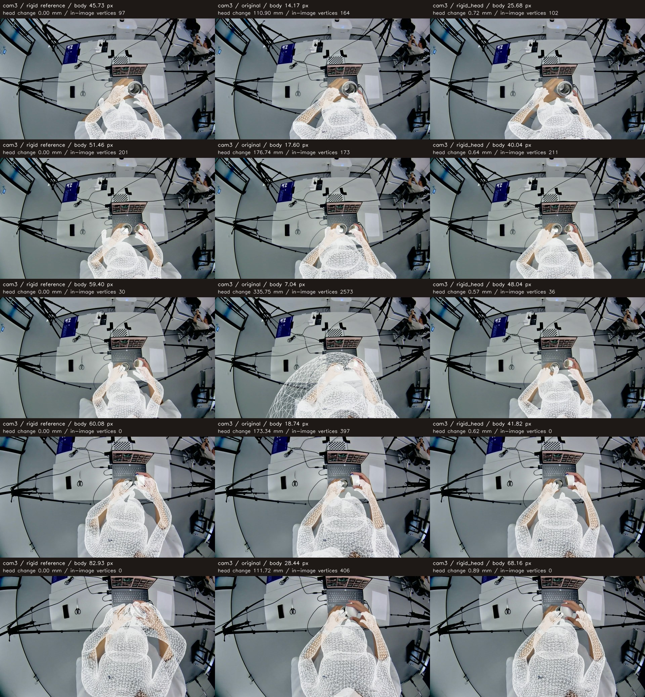
身体阶段：刚体参考 / 原流程 / 本次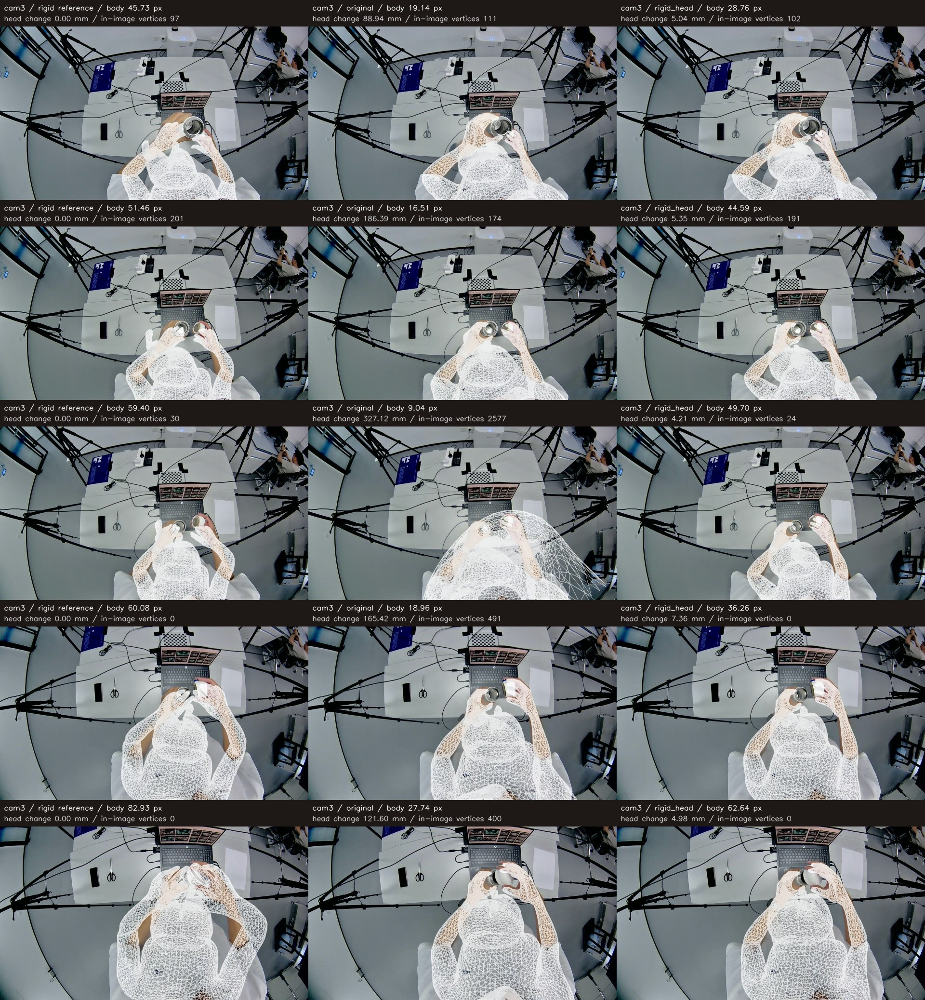
最终阶段：刚体参考 / 原流程融合 / 本次融合cam4 全部五帧汇总图
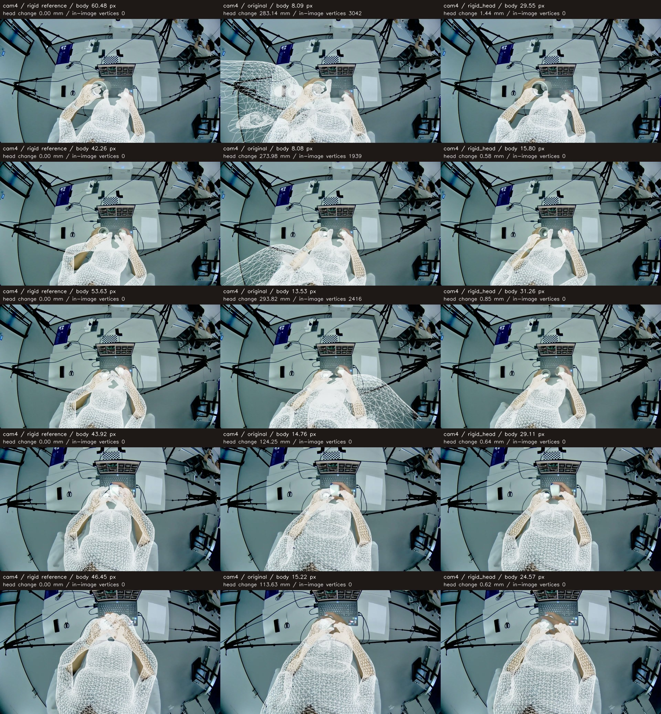
身体阶段：刚体参考 / 原流程 / 本次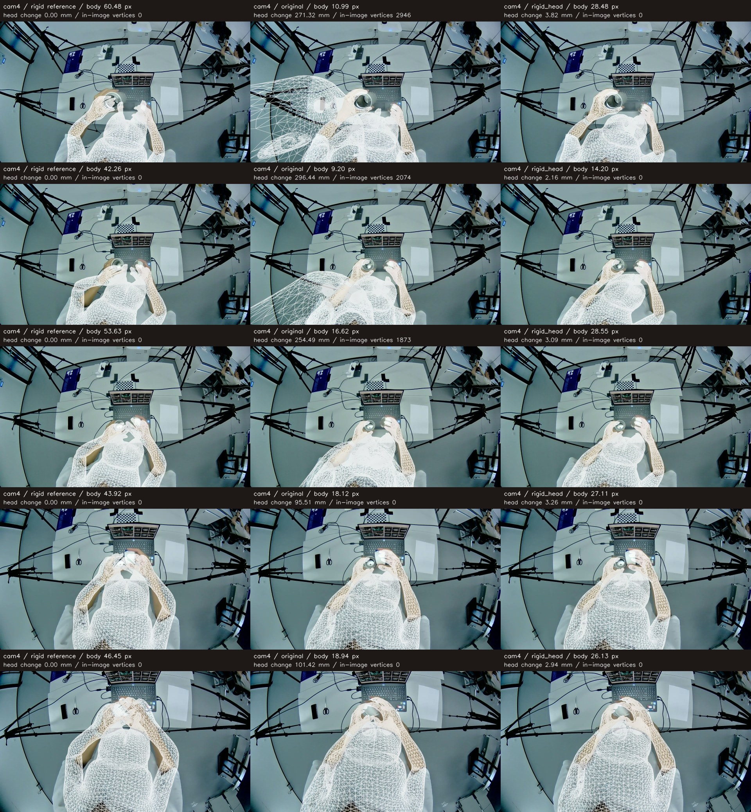
最终阶段：刚体参考 / 原流程融合 / 本次融合cam3 · 18.422 s · 本次新增
原、新身体与最终投影整体差别较小，没有中心帧那种巨大头部外扩；肩臂位置仍有变化，不能因为最终手部接近就认为身体拟合无损。 身体RMSE 19.14→28.76px，手部10.49→11.55px；头部相对刚体RMS 5.04mm，入图顶点111→102；局部相交面配对左/右41/0→32/0。
EgoSMPLX 原始预测
 原流程：身体 202.95 px；头部相对刚体RMS 256.14 mm；入图顶点 0
原流程：身体 202.95 px；头部相对刚体RMS 256.14 mm；入图顶点 0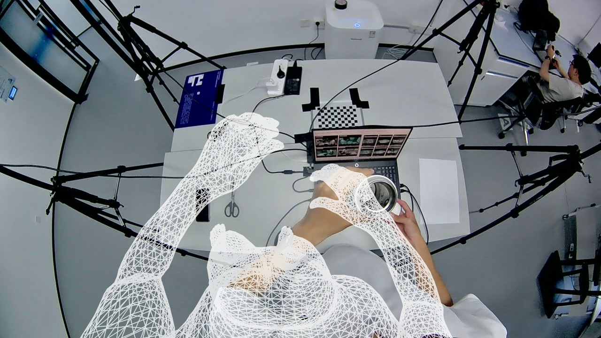
刚体头部参考＋原身体点：身体 202.95 px；头部相对刚体RMS 256.14 mm；入图顶点 0刚体校正
 原流程：身体 45.73 px；头部相对刚体RMS 0.00 mm；入图顶点 97
原流程：身体 45.73 px；头部相对刚体RMS 0.00 mm；入图顶点 97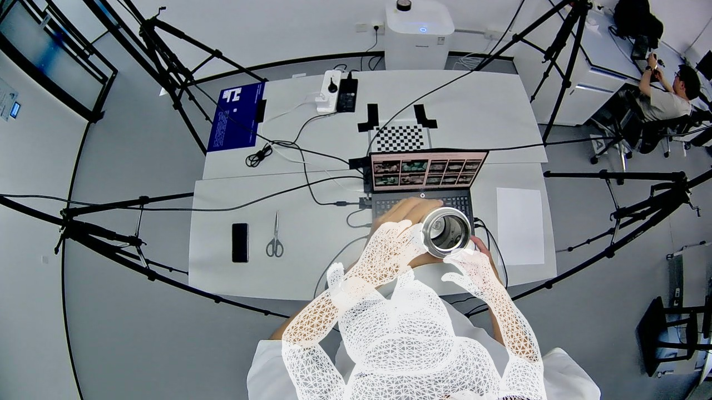
刚体头部参考＋原身体点：身体 45.73 px；头部相对刚体RMS 0.00 mm；入图顶点 97Sapiens2 身体姿态优化
 原流程：身体 14.17 px；头部相对刚体RMS 110.90 mm；入图顶点 164
原流程：身体 14.17 px；头部相对刚体RMS 110.90 mm；入图顶点 164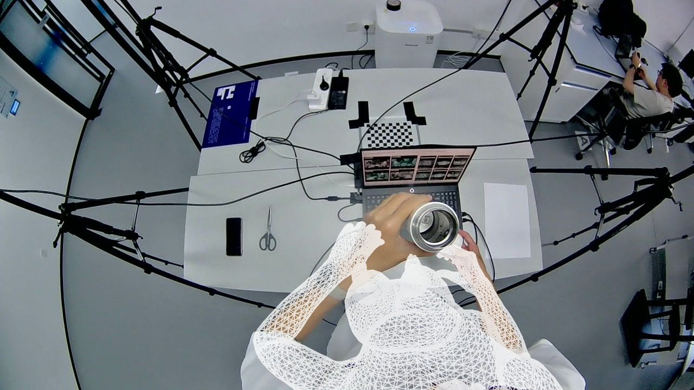
刚体头部参考＋原身体点：身体 25.68 px；头部相对刚体RMS 0.72 mm；入图顶点 102腕部优化
 原流程：身体 17.62 px；头部相对刚体RMS 115.30 mm；入图顶点 178
原流程：身体 17.62 px；头部相对刚体RMS 115.30 mm；入图顶点 178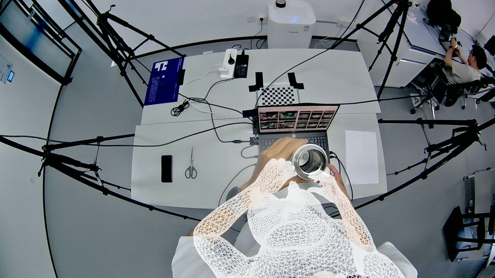
刚体头部参考＋原身体点：身体 28.62 px；头部相对刚体RMS 0.88 mm；入图顶点 98轮廓优化
 原流程：身体 18.88 px；头部相对刚体RMS 108.25 mm；入图顶点 158刚体头部参考＋原身体点：身体 29.36 px；头部相对刚体RMS 1.05 mm；入图顶点 99
原流程：身体 18.88 px；头部相对刚体RMS 108.25 mm；入图顶点 158刚体头部参考＋原身体点：身体 29.36 px；头部相对刚体RMS 1.05 mm；入图顶点 99MANO 辅助身体
 原流程：身体 19.14 px；头部相对刚体RMS 88.94 mm；入图顶点 111
原流程：身体 19.14 px；头部相对刚体RMS 88.94 mm；入图顶点 111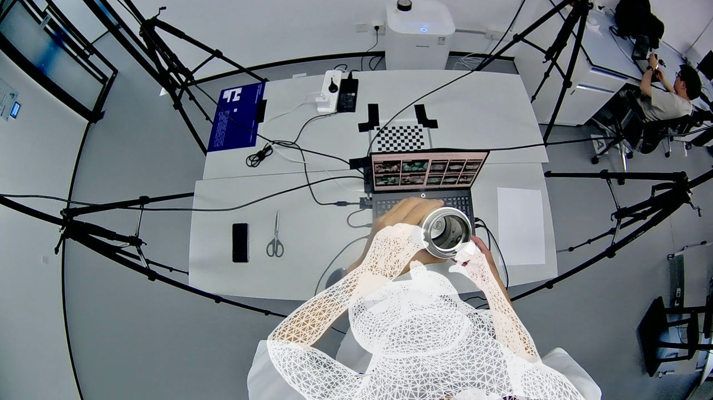
刚体头部参考＋原身体点：身体 28.76 px；头部相对刚体RMS 5.04 mm；入图顶点 102原接缝融合结果
同一区域左右手放大
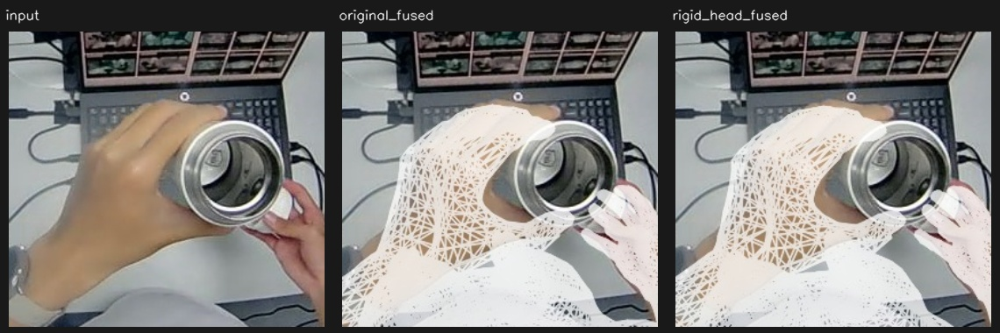
left：原图 / 原流程 / 本次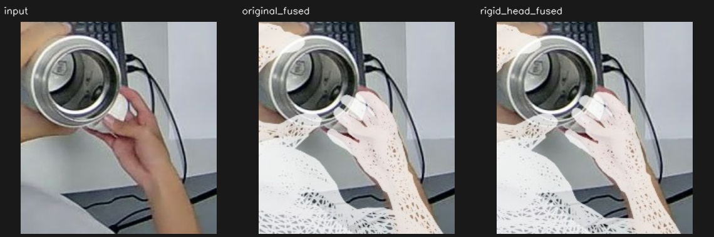
right：原图 / 原流程 / 本次cam3 · 18.927 s · 本次新增
新身体阶段躯干/肩带与原结果有可见差别，最终融合后双手整体接近，未出现中心帧那种大幅头部覆盖。 身体RMSE 16.51→44.59px，手部9.36→11.39px；头部相对刚体RMS 5.35mm，入图顶点174→191；局部相交面配对左/右26/0→24/0。
EgoSMPLX 原始预测
 原流程：身体 216.21 px；头部相对刚体RMS 301.11 mm；入图顶点 0
原流程：身体 216.21 px；头部相对刚体RMS 301.11 mm；入图顶点 0 刚体头部参考＋原身体点：身体 216.21 px；头部相对刚体RMS 301.11 mm；入图顶点 0
刚体头部参考＋原身体点：身体 216.21 px；头部相对刚体RMS 301.11 mm；入图顶点 0刚体校正
 原流程：身体 51.46 px；头部相对刚体RMS 0.00 mm；入图顶点 201
原流程：身体 51.46 px；头部相对刚体RMS 0.00 mm；入图顶点 201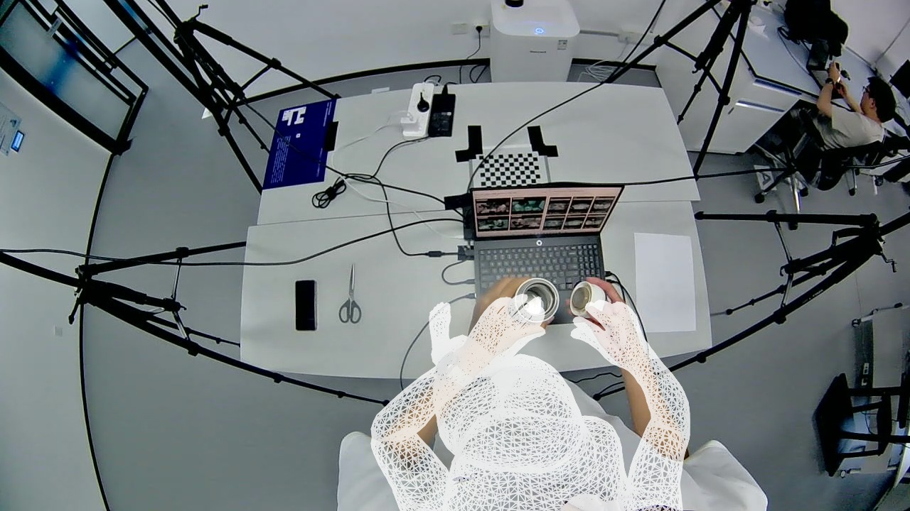
刚体头部参考＋原身体点：身体 51.46 px；头部相对刚体RMS 0.00 mm；入图顶点 201Sapiens2 身体姿态优化
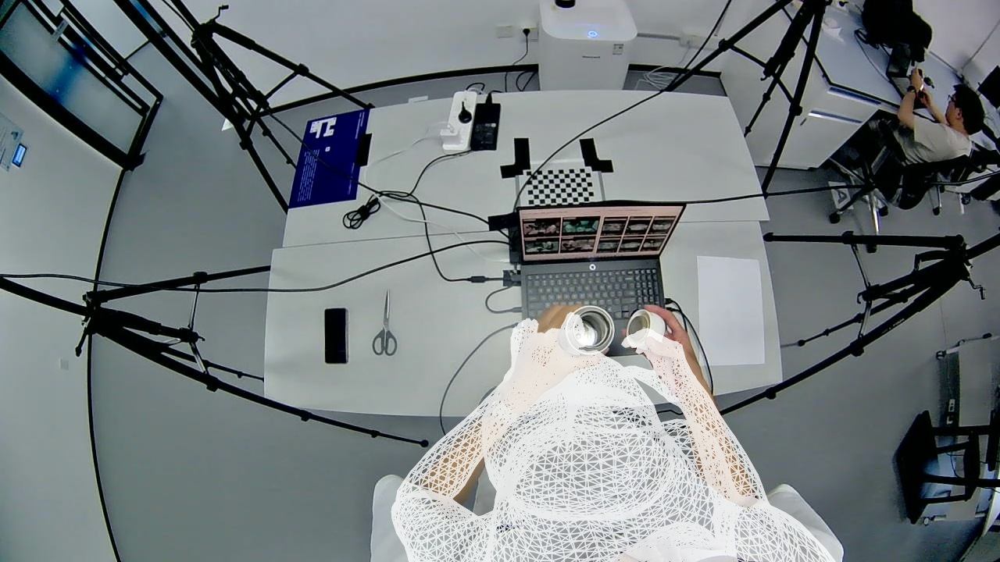
原流程：身体 17.60 px；头部相对刚体RMS 176.74 mm；入图顶点 173刚体头部参考＋原身体点：身体 40.04 px；头部相对刚体RMS 0.64 mm；入图顶点 211腕部优化
 原流程：身体 19.58 px；头部相对刚体RMS 180.77 mm；入图顶点 182
原流程：身体 19.58 px；头部相对刚体RMS 180.77 mm；入图顶点 182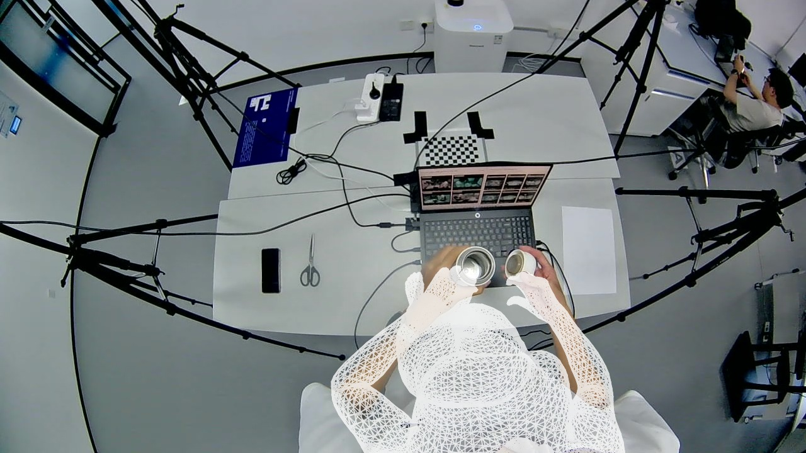
刚体头部参考＋原身体点：身体 43.44 px；头部相对刚体RMS 0.71 mm；入图顶点 216轮廓优化
 原流程：身体 20.45 px；头部相对刚体RMS 180.35 mm；入图顶点 189
原流程：身体 20.45 px；头部相对刚体RMS 180.35 mm；入图顶点 189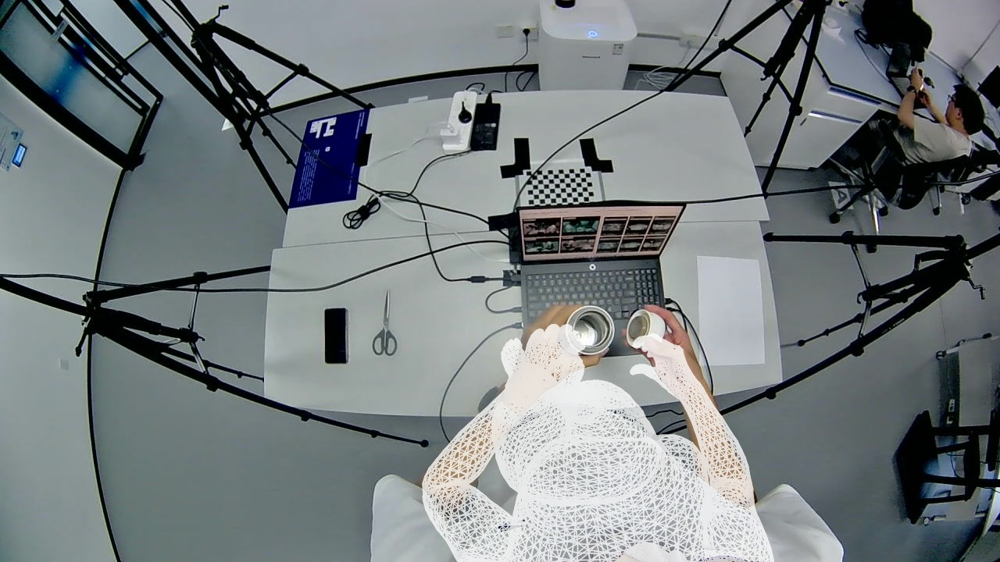
刚体头部参考＋原身体点：身体 44.11 px；头部相对刚体RMS 0.96 mm；入图顶点 230MANO 辅助身体
 原流程：身体 16.51 px；头部相对刚体RMS 186.39 mm；入图顶点 174刚体头部参考＋原身体点：身体 44.59 px；头部相对刚体RMS 5.35 mm；入图顶点 191
原流程：身体 16.51 px；头部相对刚体RMS 186.39 mm；入图顶点 174刚体头部参考＋原身体点：身体 44.59 px；头部相对刚体RMS 5.35 mm；入图顶点 191原接缝融合结果
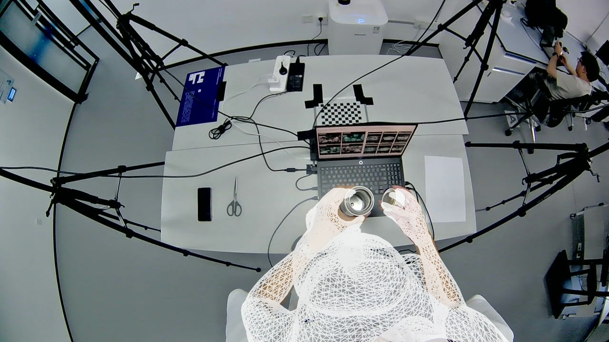
原流程：身体 16.51 px；头部相对刚体RMS 186.39 mm；入图顶点 174刚体头部参考＋原身体点：身体 44.59 px；头部相对刚体RMS 5.35 mm；入图顶点 191同一区域左右手放大
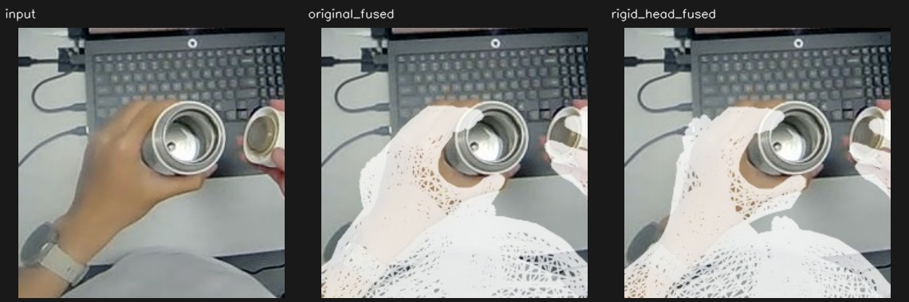
left：原图 / 原流程 / 本次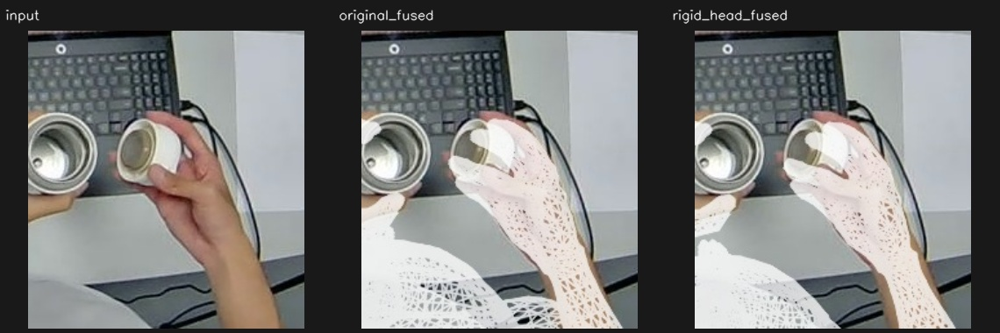
right：原图 / 原流程 / 本次cam3 · 19.904 s · 本次新增
新结果身体阶段胸肩整体投影发生变化，最终双手位置总体接近；头部保持刚体参考没有消除自动肩肘点残差。 身体RMSE 18.96→36.26px，手部11.22→11.39px；头部相对刚体RMS 7.36mm，入图顶点491→0；局部相交面配对左/右0/0→0/0。
EgoSMPLX 原始预测
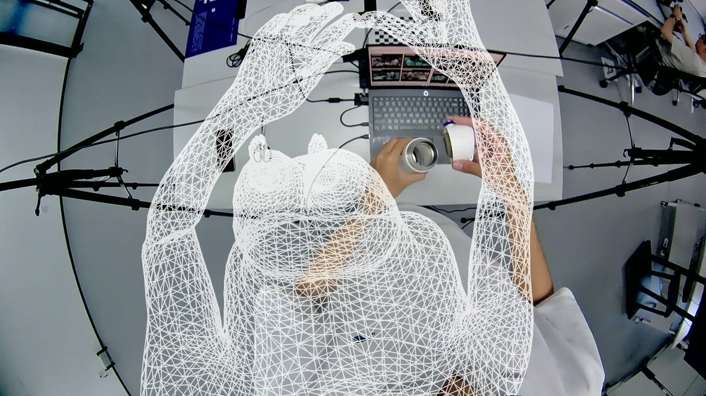
原流程：身体 224.77 px；头部相对刚体RMS 199.59 mm；入图顶点 0 刚体头部参考＋原身体点：身体 224.77 px；头部相对刚体RMS 199.59 mm；入图顶点 0
刚体头部参考＋原身体点：身体 224.77 px；头部相对刚体RMS 199.59 mm；入图顶点 0刚体校正
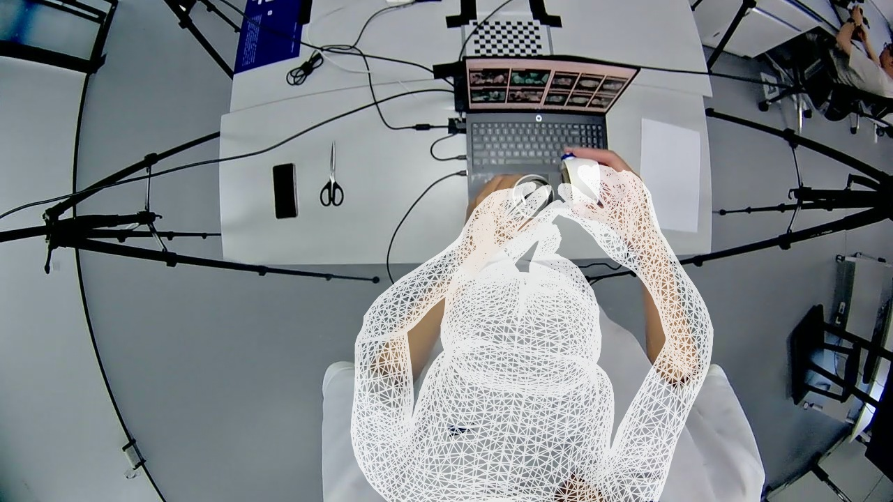
原流程：身体 60.08 px；头部相对刚体RMS 0.00 mm；入图顶点 0 刚体头部参考＋原身体点：身体 60.08 px；头部相对刚体RMS 0.00 mm；入图顶点 0
刚体头部参考＋原身体点：身体 60.08 px；头部相对刚体RMS 0.00 mm；入图顶点 0Sapiens2 身体姿态优化
 原流程：身体 18.74 px；头部相对刚体RMS 173.34 mm；入图顶点 397
原流程：身体 18.74 px；头部相对刚体RMS 173.34 mm；入图顶点 397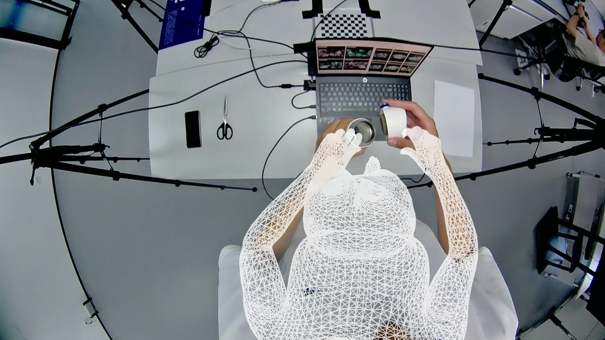
刚体头部参考＋原身体点：身体 41.82 px；头部相对刚体RMS 0.62 mm；入图顶点 0腕部优化
轮廓优化
MANO 辅助身体
原流程：身体 18.96 px；头部相对刚体RMS 165.42 mm；入图顶点 491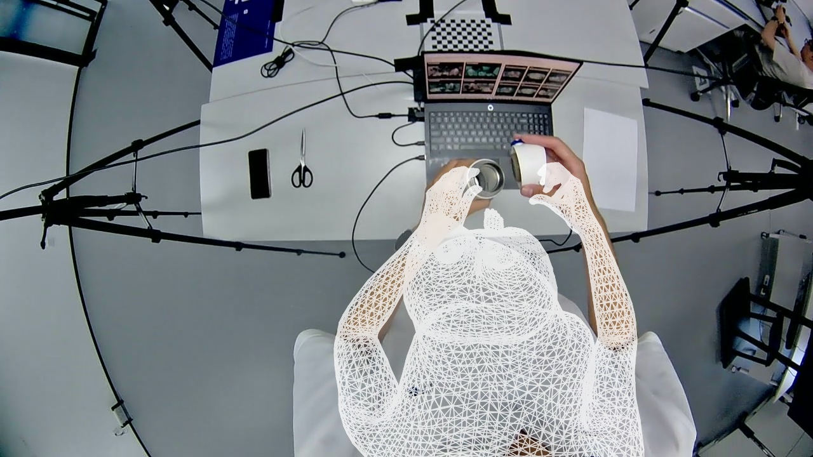
刚体头部参考＋原身体点：身体 36.26 px；头部相对刚体RMS 7.36 mm；入图顶点 0 原接缝融合结果
 原流程：身体 18.96 px；头部相对刚体RMS 165.42 mm；入图顶点 491
原流程：身体 18.96 px；头部相对刚体RMS 165.42 mm；入图顶点 491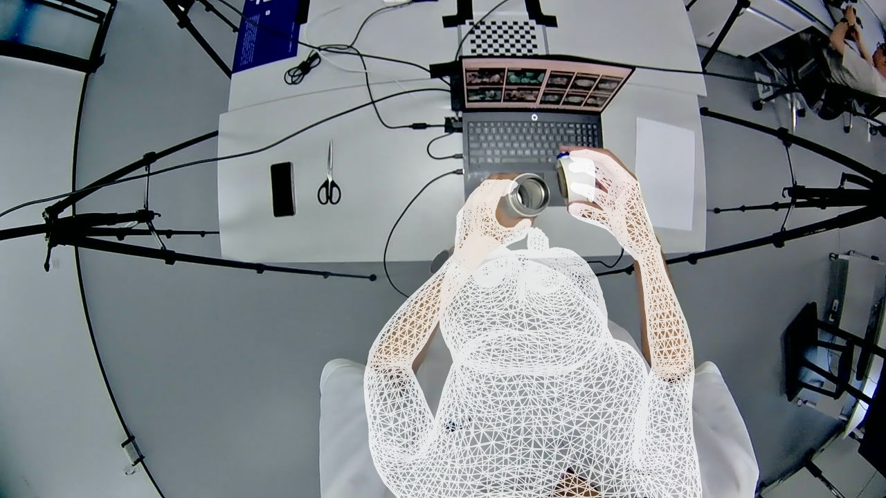
刚体头部参考＋原身体点：身体 36.26 px；头部相对刚体RMS 7.36 mm；入图顶点 0同一区域左右手放大
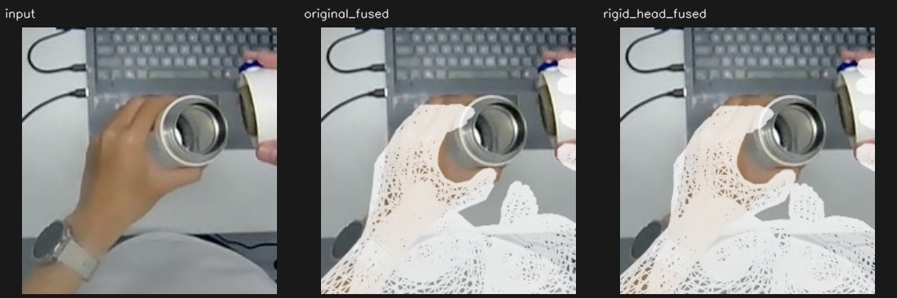
left：原图 / 原流程 / 本次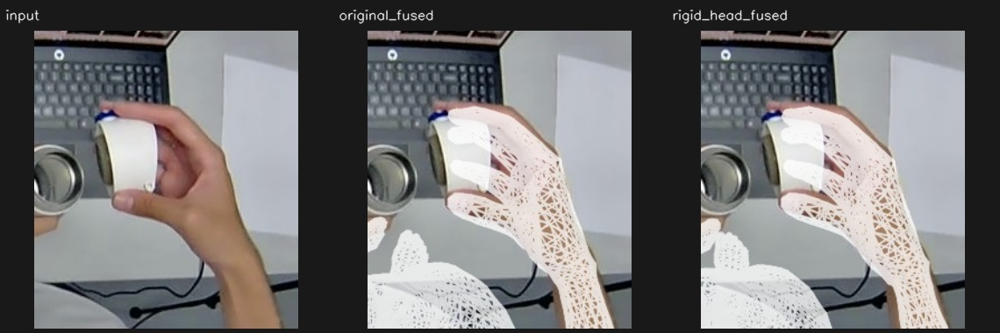
right：原图 / 原流程 / 本次cam3 · 20.409 s · 本次新增
身体阶段与最终融合未见新增的大幅头部外扩；最终手部整体位置仍接近原流程，但自动鼻点及肩点残差明显增加。 身体RMSE 27.74→62.64px，手部12.31→12.44px；头部相对刚体RMS 4.98mm，入图顶点400→0；局部相交面配对左/右0/0→0/0。
EgoSMPLX 原始预测
 原流程：身体 256.40 px；头部相对刚体RMS 149.25 mm；入图顶点 0
原流程：身体 256.40 px；头部相对刚体RMS 149.25 mm；入图顶点 0 刚体头部参考＋原身体点：身体 256.40 px；头部相对刚体RMS 149.25 mm；入图顶点 0
刚体头部参考＋原身体点：身体 256.40 px；头部相对刚体RMS 149.25 mm；入图顶点 0刚体校正
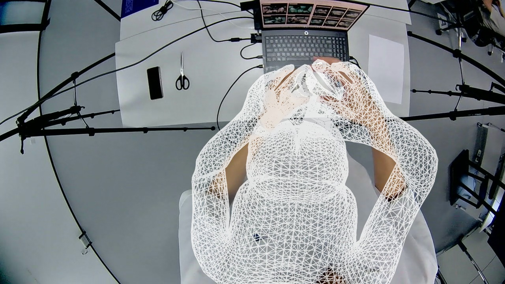
原流程：身体 82.93 px；头部相对刚体RMS 0.00 mm；入图顶点 0 刚体头部参考＋原身体点：身体 82.93 px；头部相对刚体RMS 0.00 mm；入图顶点 0
刚体头部参考＋原身体点：身体 82.93 px；头部相对刚体RMS 0.00 mm；入图顶点 0Sapiens2 身体姿态优化
 原流程：身体 28.44 px；头部相对刚体RMS 111.72 mm；入图顶点 406
原流程：身体 28.44 px；头部相对刚体RMS 111.72 mm；入图顶点 406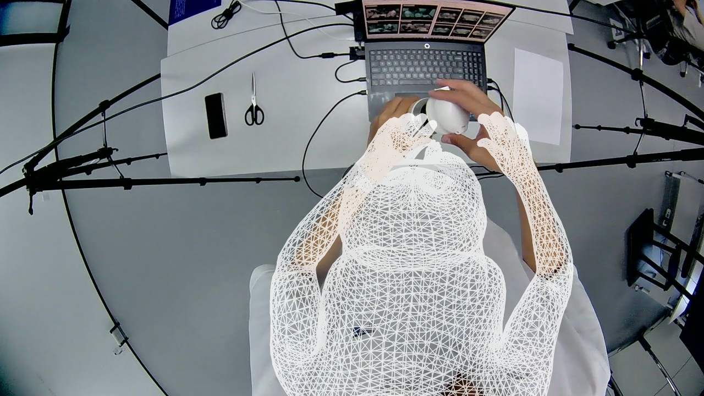
刚体头部参考＋原身体点：身体 68.16 px；头部相对刚体RMS 0.89 mm；入图顶点 0腕部优化
 原流程：身体 30.64 px；头部相对刚体RMS 108.27 mm；入图顶点 273
原流程：身体 30.64 px；头部相对刚体RMS 108.27 mm；入图顶点 273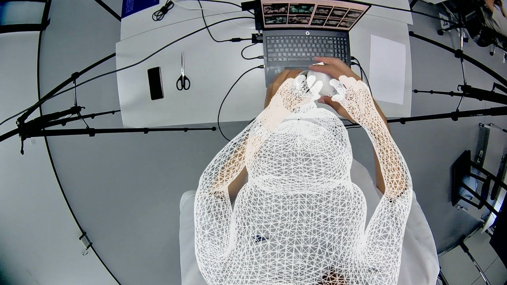
刚体头部参考＋原身体点：身体 69.44 px；头部相对刚体RMS 0.82 mm；入图顶点 0轮廓优化
MANO 辅助身体
 原流程：身体 27.74 px；头部相对刚体RMS 121.60 mm；入图顶点 400
原流程：身体 27.74 px；头部相对刚体RMS 121.60 mm；入图顶点 400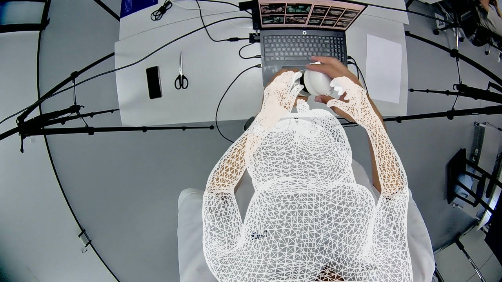
刚体头部参考＋原身体点：身体 62.64 px；头部相对刚体RMS 4.98 mm；入图顶点 0原接缝融合结果
同一区域左右手放大
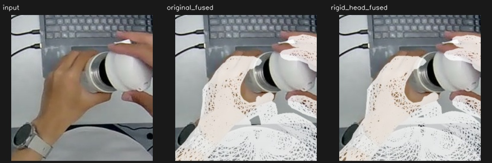
left：原图 / 原流程 / 本次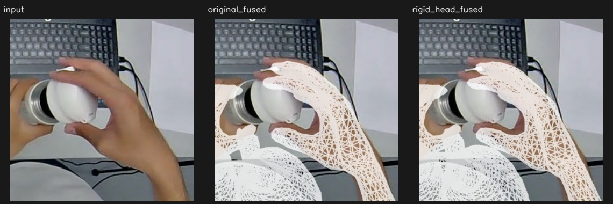
right：原图 / 原流程 / 本次回退checkpoint：7df7cc291a2347c4f559cd847d69378ac06a197f；拟合代码：41705371b593d6258b0ed472b6de6e6a6694052e。本次未修改优化代码，未替换默认流程。